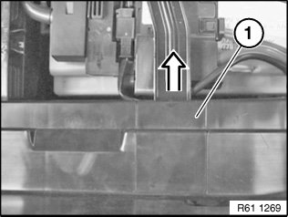
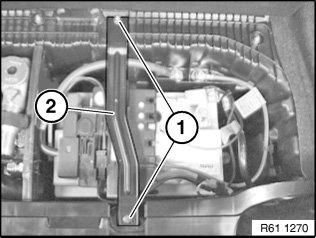
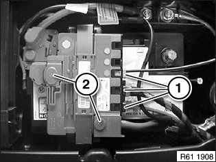
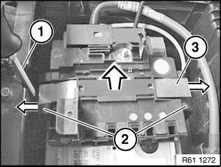
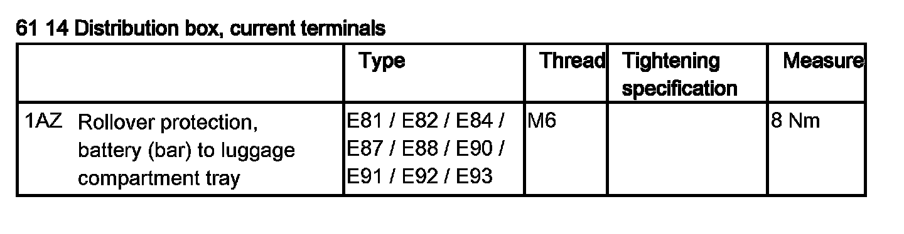
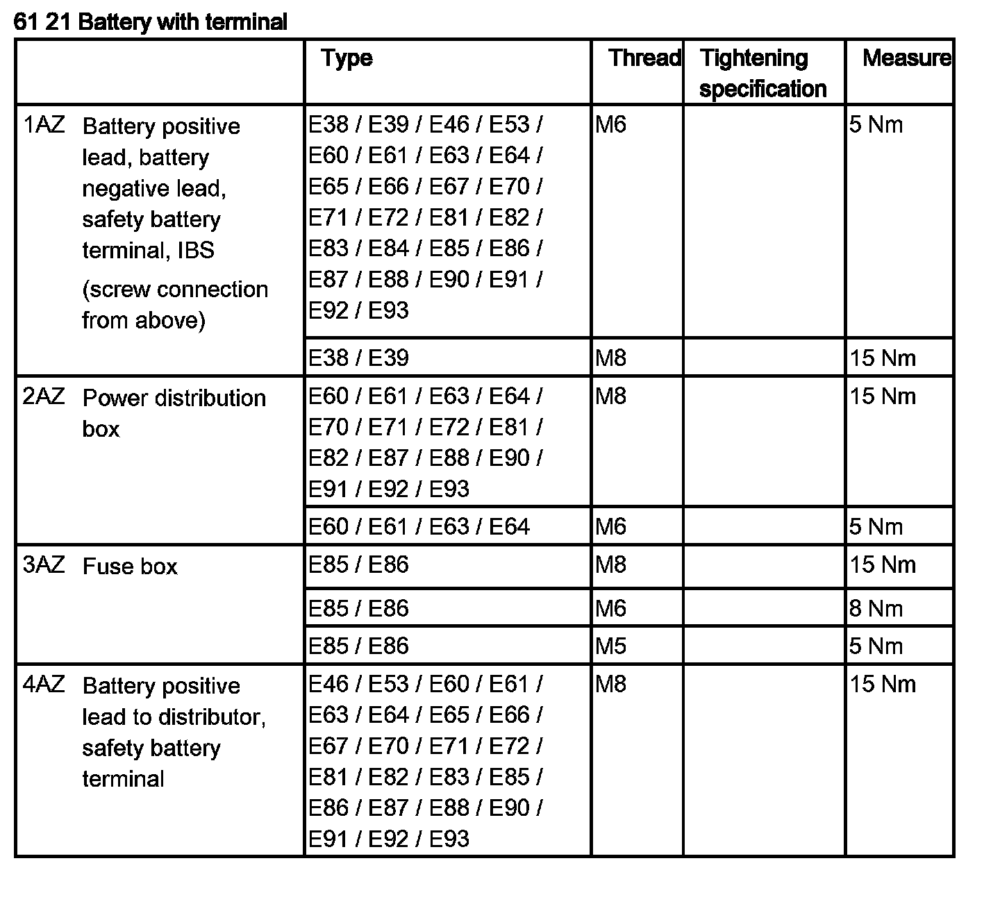

61 14 010 Removing and Installing/Replacing Distribution Box (on Battery)
61 14 010 Removing And Installing/replacing Power Distributor (on Battery) (from 03/2007)

WARNING: Observe safety instructions for handling vehicle battery.

Necessary preliminary tasks:
- Remove luggage compartment floor trim
- Disconnect battery negative lead

E81/E87:
Unclip trim (1) in direction of arrow and remove.

Release screws (1) and remove bracket (2). Tightening torque 61 14 1AZ.

Disconnect plug connection (1).
If necessary, release wiring harness fasteners from power distributor.
Open covers (2) and release nuts underneath.
Tightening torque
- 61 21 2AZ
- 61 21 4AZ

Press locking brackets (2) downwards and unclip.
If necessary, using a screwdriver (1), expand locking bracket (2) at lower end and clip out.
Remove power distributor (3) towards top.

